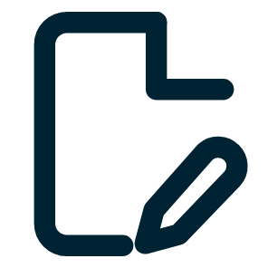
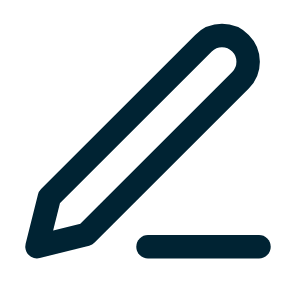

Elke opdracht is een datapunt
Bronnen

Schrijfopdrachten en papers

Open vragen
Docentfeedback in Eduface
Elk datapunt
Score
per rubriccriterium
Leerdoel
van het vak
Moment
in de tijd
Leerprofiel
Eén student, over tijd
Analyseren
Bronnengebruik
Argumenteren
tijd →
Het leerprofiel is een concept. De leerdoelen zijn voorbeelden: elk vak werkt met zijn eigen leerdoelen.

1